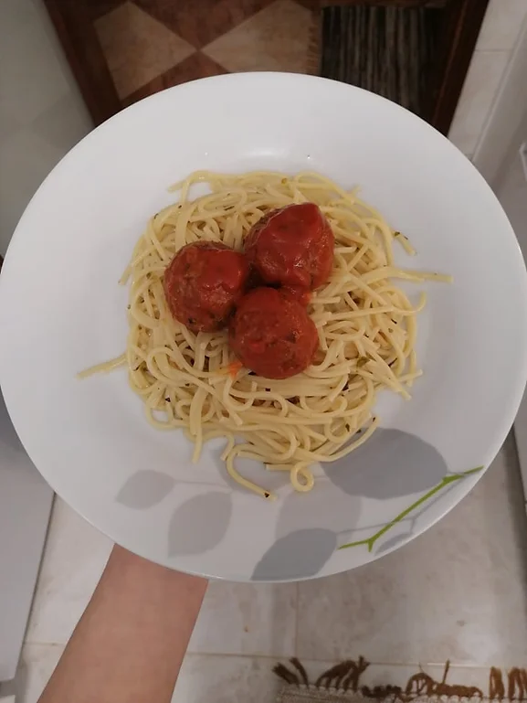

Almôndegas Vegan
Tempo de preparação
15min
Horeas de Cozimento
20min
Tempo Total
35min
Porções
2

Ingredientes
Almôndegas Vegan:
- 5 miolos de noz
- ½ beringela cortada aos cubos
- 5 cogumelos de cor castanha
- pão ralado
- 1 alho picado
- “ovo” de linhaça
- sal q.b
- pimenta preta q.b
- orégãos q.b
Molho de tomate:
- ½ cebola picada
- ½ alho francês cortado às rodelas
- 1 alho picado
- 5 tomates cherry
- polpa de tomate q.b
- sal q.b
- orégãos q.b
- 1 folha de loureiro
Massa esparguete:
- massa esparguete q.b
- 1 folha de loureiro
- azeite q.b
- sal q.b
- pimenta preta q.b
- orégãos q.b